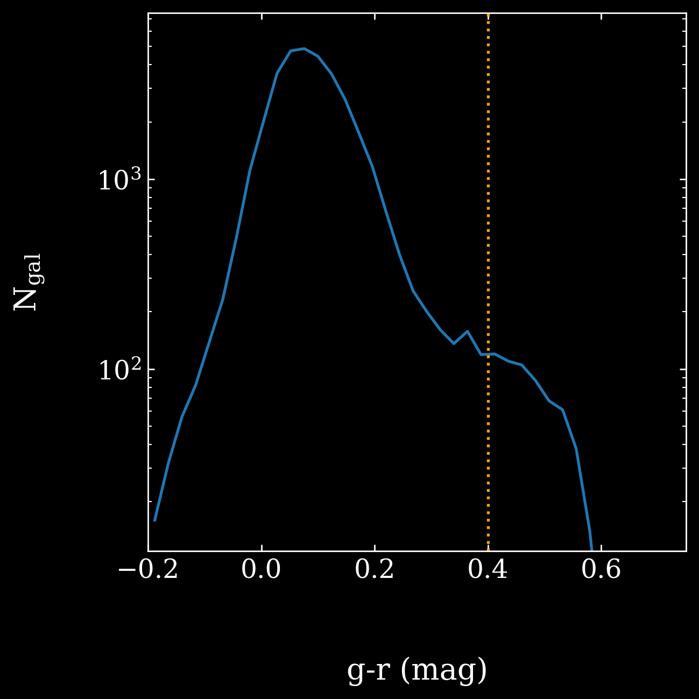
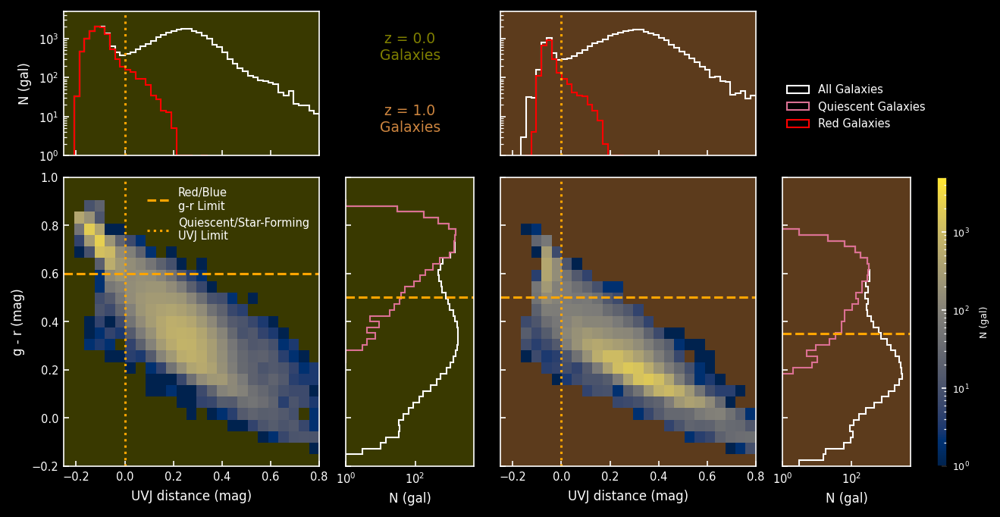
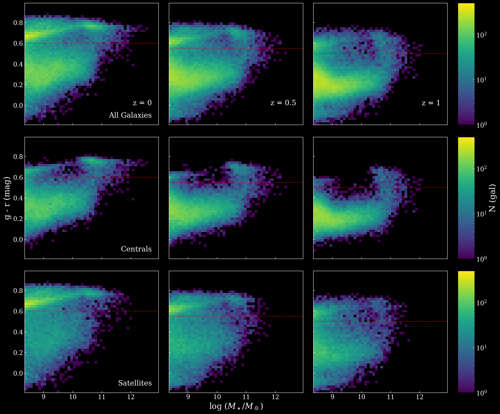
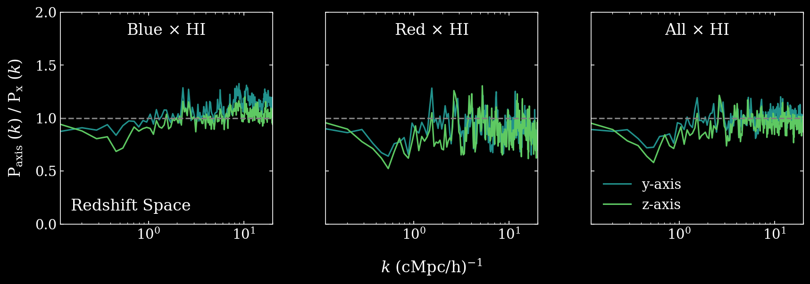
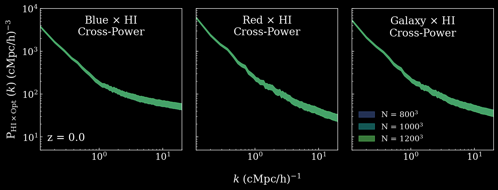

high redshift color distribution
Color distribution for
galaxies at z = 2. The bimodal
distribution is not clear and does
not accurately reflect that seen in
observations (Whitaker+15, Kreik+15).
Beyond that, only
having a few hundred
red galaxies may lead to shot noise
issues. Thus we do not extend our
analysis to redshifts beyond z = 1.

comparing color to star formation state
Analyzes the differences between our definitions of red and
blue galaxies and star-forming and quiescent galaxies.
Red galaxies are not necessarily quenched, as some
active galaxies can appear red due to abundant
dust. Donnari+19 separates galaxies into star-forming
and quenched populations via lines in the
(V-J) - (U-V) plane (see their figure 1). We represent a
galaxy's position in the UVJ plane as its distance
to the threshold separating active and quenched galaxies (x-axis),
where negative distances indicate quenched galaxies.
The y-axis contains the fiducial g-r cuts
(which change with redshift) used in our analysis. Thresholds from both
Donnari+19 and our analysis are represented with orange lines.
The 2D histograms show how the galaxy populations from z = 0
(green background) and z = 1 (brown background)
fall into the UVJ and g - r planes. Galaxies in the upper left
quadrant are red and quenched, galaxies in the
lower right are blue and star-forming. The other two quadrants are
galaxies that color doesn't accurately identify.
The effect of the misidentification is seen in the 1D
histograms along each axis. The panel above shows the UVJ
distribution in white, and then the UVJ distribution of galaxies
we identified as red in red. The number of
star-forming galaxies misidentified as red are negligible at both redshifts.
However, at z > 1 this is no
longer the case (see Donnari+19).
The panels to the right of the 2D histograms show the g-r
distributions for all galaxies (white) and quiescent galaxies (pink).
Again, galaxies we identify as blue
that are quenched is negligible, so at the redshifts we
examine in our analysis the distinction between
"red and blue" and "star-forming and quiescent" is negligible.

Color evolution of centrals and satellites
Color-mass plane of galaxies at z = 0, 0.5, and 1 for centrals, satellites
and both. The red line corresponds to the fiducial g-r
cut made in the main paper for each redshift, where galaxies
lying above the cut are red and below blue.
Red galaxies poorly occupy the regime around
M⋆ = 1010M⊙
,
particularly at z = 1. This regime starts to fill in as
less massive centrals and more massive satellites quench at later redshifts.

redshift-space power spectra with velocities projected along alternate axes
Galaxy auto powers in redshift space at z = 0,
projecting velocities along different lines of sight.
Each line of sight is plotted as a ratio over the
fiducial x-axis. It is not necessarily expected
that each line of sight gives similar power spectra,
as some axes will collapse faster than others
(Zel'dovich pancake). In any case, the auto powers
change by a factor of about 1.3 on the largest
scales, so the effect is not large.

convergence of power spectra with grid resolution
Tests of the convergence of cross-powers with different grids.
The grids lie directly on top of one another, thus we conclude
that our results are converged.
{kind=link}
{kind=link}
{kind=link}
{kind=link}
{kind=link}